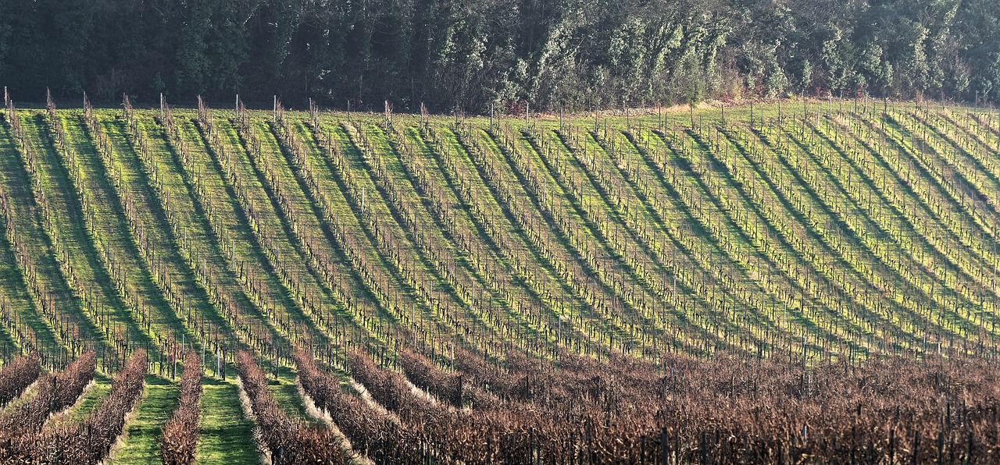

Os vinhos de Bordeaux são considerado os melhores do mundo
- Merlot
- Cabernet Sauvigon
- Carbenet Franc
- Petit Verdot
- Carménère
- Malbec
- Bas-Médoc
- Haut-Médoc
- Saint-Croix-du-Mont
- Côtes de Castilon F
| Vinho | Cidade | Lado do palntio |
|---|---|---|
| Premier Grand Cru | Bas-Médoc | Margem Esquerda |
| Crus Classés | Graves | Margem Esquerda |
| Les Asteries | Saint-Émilion | Margem Direita |